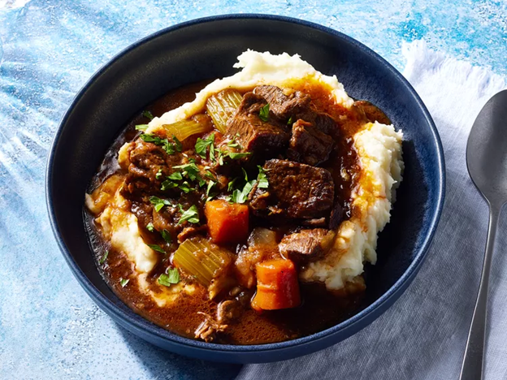

Beef and Guinnness Stew

This is a highly rated beef and guinness stew recipe, and it is obviously delicious! You can expect 30 minutes
of prep time and 2 hours and 30 minutes of cook time. This recipe makes 6 servings. Enjoy!
Ingredients
- 4 slices bacon, cut into small pieces
- 2 1/2 pounds boneless beef chuck, cut into 2-inch pieces
- 1 1/2 teaspoons salt, divided, or more to taste
- freshly ground black pepper to taste
- 2 onions, coarsely chopped
- 4 cloves garlic, minced
- 1 (14.9 ounce) can dark beer (such as Guinness)
- 1/4 cup tomato paste
- 3 carrots, cut into 1-inch pieces
- 2 ribs celery, cut into 1-inch pieces
- 4 springs fresh thyme
- 1 teaspoon white sugar
- 1/2 teaspoon freshly ground black pepper, or to taste
- 2 1/2 cups chicken stock, or as needed to cover
- 4 cups mashed potatoes (Optional)
Steps
- Gather all ingredients.
- Cook and stir bacon in a heavy skillet over medium-high heat until bacon is browned and crisp, 3 to 4
minutes. Turn off the heat and transfer bacon into a large stew pot, reserving bacon fat in the skillet.
- Season beef chuck cubes generously with 1 teaspoon salt and black pepper to taste. Turn heat to high under
the skillet and sear beef pieces in the hot fat on both sides until browned, about 5 minutes. Place beef in
the stew pot with bacon, leaving fat in the skillet.
- Turn heat down to medium; cook and stir onions in the retained fat in the skillet until lightly browned, 5
to 8 minutes; season with a large pinch of salt.
- Cook garlic with onions until soft, about 1 minute. Pour beer into the skillet and stir with a wooden spoon,
scraping up and dissolving any browned bits of food into the liquid.
- Pour cooking liquid from the skillet into the stew pot. Stir in tomato paste, carrots, celery, thyme sprigs,
sugar, 1/2 teaspoon black pepper, and enough chicken broth to cover.
- Bring stew to a gentle simmer, stirring to combine; reduce heat to low and cover pot.
- Simmer stew until beef is fork-tender, about 2 hours.
- Stir stew occasionally and skim fat or foam if desired.
- Remove cover and raise heat to medium-high. Bring stew to a low boil and cook until stew has slightly
thickened, 15 to 20 minutes. Remove and discard thyme sprigs and adjust salt and pepper to taste.
- Arrange mashed potatoes in a ring in a serving bowl; ladle stew into the center of the potatoes.
Nutrition Facts
This is a nutritional breakdown per serving.
- 528 Calories
- 25g Fat
- 42g Carbs
- 29g Protein
Find more tasty recipes here!